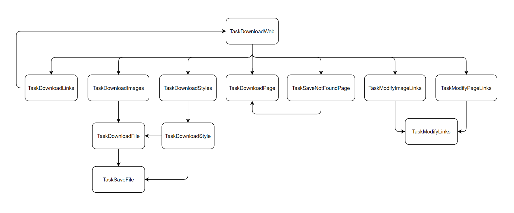

Web downloader
Http
- HttpClient: Trieda na komunikaciu s HTTP serverom, dokaze sa pripojit, vyziadat URL a precitat odpoved
- HttpPath: Pouziva sa na vsetky odkazy (relativne aj absolutne), dokaze odkaz parsovat na hostname a uri
- HttpMap: Mapa HTTP servera pomocou ktorej sa pamataju uz navstivene linky a tym sa predchadza opakovanym stahovaniam
Html
- HtmlParser: Parsovaci interface medzi libxml2 a aplikaciou, dokaze z HTML stringu vyrobit HTML strom
- HtmlDumper: Generovaci interface medzi libxmlľ a aplikaciou, dokaze ulozit HTML strom do HTML suboru
- Html: Vyraba ho HtmlParser, je to interface na manipulaciu s libxml2 strom, vie vyhladat tagy a menit ich atributy
Application
- Staticke data a setttingy aplikacie, tu sa deje jednoduche parsovanie argumentov a cez
run() sa spusta aplikacia
Task
- Je to architektura ktora umoznuje definovat task ktory moze pozostavat z viacerych znovupouzitelnych mensich subtaskoch
- Funguje na principe Chain-of-responsibility: task definuje ktory subtask bude nasledovat za nim
- Napr.: task stiahnutie vsetkych obrazkov zahrna najdenie vsetkych obrazkov a na kazdy obrazok definovanie subtasku
stiahnutie suboru, ktory nasledne subor stiahne a ako subtask si definuje task ulozenie suboru, ktory uz
nema dalsie subtasky.
- Z hladiska implementacie je to spravene tak, ze trieda
TaskBase je zakladna trieda od ktorej musia dedit vsetky
tasky. Kazdy task dostane vsetky vstupy cez konstruktor a uloha toho tasku sa deje v v process() - ktory musi
implementovat. Task si v process() definuje jeho subtasky cez setNext() a procesovanie subtaskov pusti
na konci funkcie process() zavolanim TaskBase::process()
TaskBase podporuje aj asynchronne (viacvlakovne) procesovanie subtaskov. Podmienkou je, aby subtasky neboli zavisle
na poradi ich spracovania. Staci v tasku nastavit subtasky cez setNext() a nakoniec ich spustit cez Taskbase::processAsync()
Flowchart taskov aplikacie
